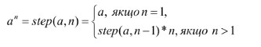
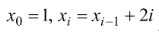
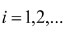
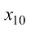

Exercise 00
Задача 0. Реалізувати рекурсивну функцію знаходження степеня числа а

solution
Exercise 01
Задача 1. Нехай  , де . Визначити  .
Розв’язати з використанням рекурсивних і нерекурсивних алгоритмів
solution
Exercise 02
Задача 2. Реалізувати бінарний пошук (розглядали на попередніх уроках)
з використанням рекурсивного алгоритму.
solution
Exercise 03
Задача 3. З використанням замикань розробити ітератор, тобто функцію, що буде поступово за окремими викликами видавати
по одне значення від заданого мінімального до заданого максимального. Якщо значення досягне максимального, то наступним
буде мінімальне значення. З використанням цієї функції реалізувати перебір номерів місяців.
solution
Exercise 04
Задача 4. З використанням замикань розробити ітератор, тобто функцію, що буде поступово за окремими викликами видавати
по одну букву наперед заданого слова. З використанням нього розробити гру «Прекладач». Виводимо для користувача опис
цього слова і по одну букву користувач вводить переклад цього слова. Підрахувати кількість вгаданих букв.
solution
Exercise 05
Задача 5. Тренажер додавання. Кожні 10 секунд користувачу задають випадковий приклад з додавання двох цифр і робиться
перевірка.
solution
Exercise 06
Задача 6. Через 20 секунд перейти на сайт ukr.net.
Для цього через 20 секунд після відкриття треба виконати команду
window.location.href = 'https://www.ukr.net/'
solution